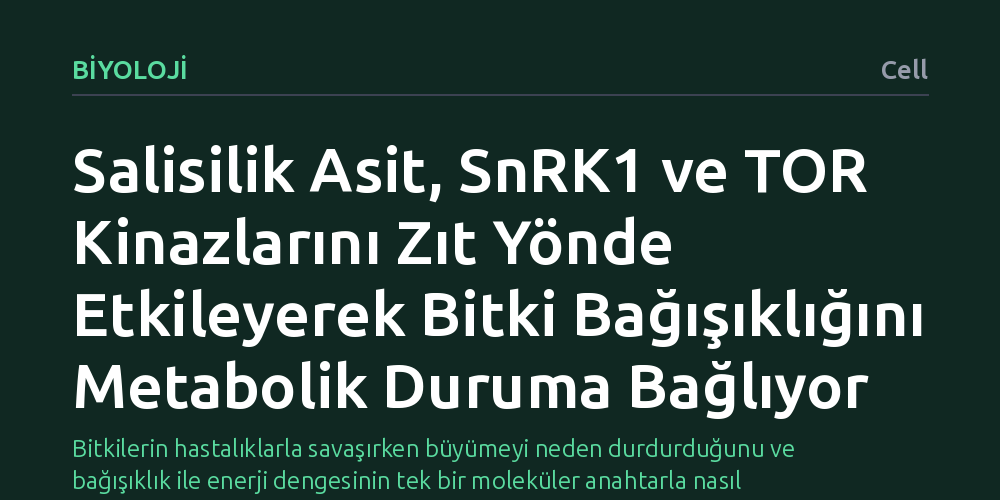

BIYOLOJI · Cell · 2026-10-21
Bitkilerde bağışıklık sinyali salisilik asidin hücrenin enerji dengesiyle nasıl iletişim kurduğu araştırıldı. Salisilik asidin enerji sensörü SnRK1'i etkinleştirip büyüme sensörü TOR'u baskıladığı ve bu iki enzimin NPR1 proteinini zıt yönde fosforilleyerek savunmayı metabolik duruma bağladığı saptandı.
Bitkilerin hastalıklarla savaşırken büyümeyi neden durdurduğunu ve bağışıklık ile enerji dengesinin tek bir moleküler anahtarla nasıl yönetildiğini açıklıyor.

Bitkiler tehlikelerden kaçamaz; mantar, bakteri ya da virüs gibi bir patojenle karşılaştıklarında tüm savunma mekanizmalarını hızla devreye sokmak zorundadırlar. Ancak bağışıklık sistemini tam kapasite çalıştırmak ciddi bir hücresel enerji maliyeti gerektirir. Hücrenin kısıtlı kaynakları varken hem büyümeye devam etmek hem de yoğun bir savunma kalkanı kurmak mümkün değildir. Bu nedenle bitkiler, büyüme ile bağışıklık arasında hassas bir kaynak paylaşımı dengesi kurmak zorundadır.
Bitki biyolojisinde uzun süredir yanıtı aranan temel soru, bitkinin savunma alarmını hücresel enerji durumuyla tam olarak nasıl koordine ettiğiydi. Salisilik asit adlı bağışıklık hormonunun hastalıklara karşı direnç sağladığı biliniyordu, fakat bu hormonun hücrenin enerji santralleri ve büyüme merkezleriyle hangi moleküler köprüler üzerinden konuştuğu aydınlatılamamıştı. Bu mekanizmanın çözülmesi, bitkilerin stres altındayken hayatta kalma stratejilerini anlamak açısından kritik bir adımdır.
Araştırmacılar, bu koordinasyonun merkezinde yer alan bileşenleri ortaya çıkarmak için bitki biyolojisinin temel model organizması olan Arabidopsis thaliana üzerinde moleküler ve biyokimyasal deneyler yürüttü. Deneylerde, bitkinin savunma hormonu olan salisilik asit devreye girdiğinde hücre içindeki temel metabolik sensörlerin aktivite değişiklikleri adım adım incelendi.
Özellikle hücrenin enerji düzeyini denetleyen SnRK1 kinazı ile hücre büyümesini yöneten TOR kinazının davranışları mercek altına alındı. Araştırma ekibi, salisilik asit sinyali varlığında bu iki ana enzimin nasıl tepki verdiğini ve bitkinin temel bağışıklık yöneticisi olan NPR1 proteini üzerindeki etkilerini hassas fosforilasyon ölçümleriyle takip etti.
Elde edilen bulgular, salisilik asidin hücre metabolizmasını yeniden programlayarak zıt yönlü iki tepki başlattığını ortaya koydu. Salisilik asit sinyali, hücrenin acil durum ve enerji tasarrufu sensörü olan SnRK1 enzimini etkinleştirirken, büyümeyi ve protein üretimini teşvik eden TOR enzimini belirgin biçimde baskılıyor. Böylece bitki tehlike anında büyüme motorunu kapatıp hayatta kalma ve savunma modunu devreye alıyor.
Çalışmanın en can alıcı bulgusu ise bu iki zıt kinazın doğrudan hedefinde gizliydi. Hem SnRK1 hem de TOR enzimleri, bitkinin ana savunma komutanı olan NPR1 proteinini farklı noktalardan fosforilliyor. Birbirine zıt bu kimyasal etiketlemeler sayesinde NPR1, hücrenin anlık enerji ve metabolik durumuna göre bağışıklık genlerini açıp kapatabiliyor. Makalede ifade edildiği üzere, bu zıt etkileşim 'hücresel metabolik durumu sistemik kazanılmış dirence' doğrudan bağlıyor.
Bu mekanizmanın çözülmesi, bitkilerin bağışıklık tepkisi verirken neden büyüme geriliği yaşadığını moleküler düzeyde açıklığa kavuşturuyor. Bitki, büyüme sinyalini kesmeden savunmayı tam olarak açamıyor; çünkü kaynak yönetimi tek bir ortak denetim mekanizmasına bağlı bulunuyor. Bu entegrasyon, bitkinin kaynaklarını tamamen tüketmeden hastalıklara karşı orantılı bir savunma geliştirmesini güvence altına alıyor.
Gelecekte daha dayanıklı tarım ürünleri geliştirmek isteyen ıslahçılar için bu bulgu yeni bir bakış açısı sunuyor. Büyümeden ve verimden ödün vermeden bitki bağışıklığını güçlendirmeye yönelik biyoteknolojik çabalarda, SnRK1 ve TOR kinazlarının NPR1 üzerindeki ince ayarını anlamak, hem yüksek verimli hem de hastalıklara dirençli ürünler tasarlamanın yolunu açabilir.